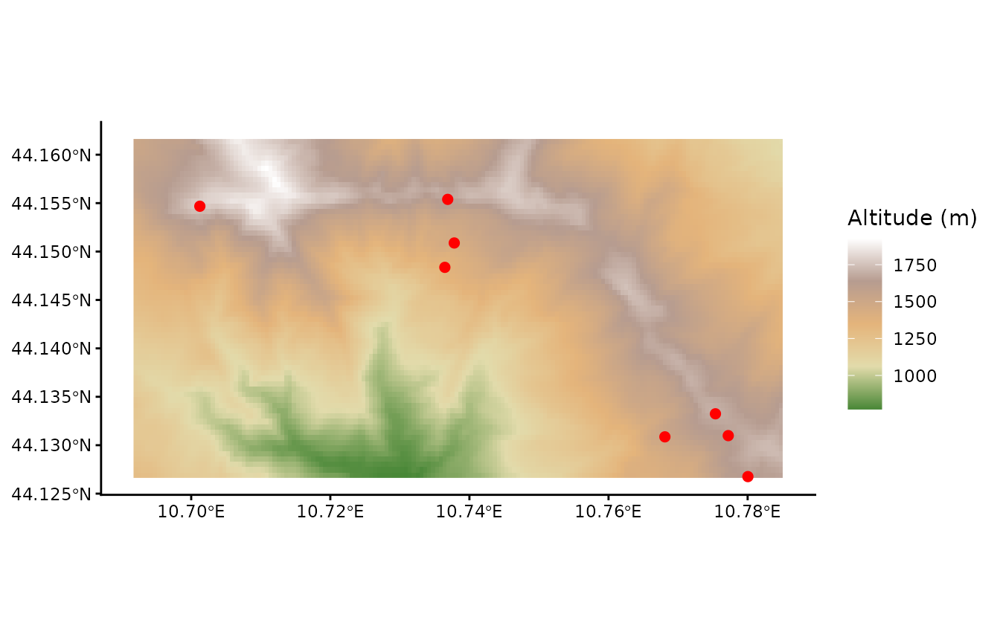

This vignette shows how to add altitude to the header table for
resy_classify(). The elevation map is too large to be
included in the package, so you need to download it separately.
Whether you need altitude depends on the expert system. In the EUNIS expert system (version 2025-10-03), for example, 15 habitat types use altitude: snow-bed vegetation (R41) and Iberian summer pasture (R24), alpine and subalpine scrub (S21, S22, S23, S25, S26), dry heath (S42), mountain forests (T1C, T1D, T31, T32, T34, T37) and coniferous plantations of non site-native trees (T3M).
If your data already records altitude, in a column
Altitude (m) or Altitude, or as the Darwin
Core columns minimumElevationInMeters and
maximumElevationInMeters, RESY uses it directly and you do
not need this vignette.
Example
The example uses a small part of the elevation map and the example plots that lie in it.
Load data
Load the altitude data for the example area:
altitude <- terra::rast(
system.file("extdata", "data_example_altitude.tif", package = "RESY")
)
altitude
#> class : SpatRaster
#> size : 63, 168, 1 (nrow, ncol, nlyr)
#> resolution : 0.0005555556, 0.0005555556 (x, y)
#> extent : 10.69171, 10.78504, 44.12662, 44.16162 (xmin, xmax, ymin, ymax)
#> coord. ref. : lon/lat WGS 84 (EPSG:4326)
#> source : data_example_altitude.tif
#> name : eurodem
#> min value : 771
#> max value : 1927Load the example plots that lie in this area:
data_sites <- readr::read_csv(
system.file("extdata", "data_example_sites.csv", package = "RESY"),
show_col_types = FALSE
) |>
dplyr::select(PlotObservationID, Longitude, Latitude) |>
sf::st_as_sf(coords = c("Longitude", "Latitude"), crs = 4326) |>
sf::st_transform(terra::crs(altitude)) |>
sf::st_crop(sf::st_bbox(altitude)) # the example uses part of the mapThe map shows the altitude and the example plots (red):
ggplot() +
tidyterra::geom_spatraster(data = altitude) +
tidyterra::scale_fill_whitebox_c(
palette = "high_relief",
na.value = "lightblue"
) +
geom_sf(data = data_sites, color = "red", size = 2) +
labs(fill = "Altitude (m)") +
theme_classic()
© EuroGeographics 2026, Istituto Geografico Militare (IGM), Italy; Licence
Get Altitude (m)
terra::extract() returns the value of the raster at each
plot, in a column named after the raster layer, here
eurodem. Any elevation raster in meters works the same way,
for example a national elevation model; use its layer name in place of
eurodem.
data_sites <- data_sites |>
mutate(
"Altitude (m)" = terra::extract(altitude, terra::vect(data_sites))$eurodem
)
data_sites
#> Simple feature collection with 8 features and 2 fields
#> Geometry type: POINT
#> Dimension: XY
#> Bounding box: xmin: 10.70124 ymin: 44.12676 xmax: 10.78004 ymax: 44.15539
#> Geodetic CRS: WGS 84
#> # A tibble: 8 × 3
#> PlotObservationID geometry `Altitude (m)`
#> * <chr> <POINT [°]> <dbl>
#> 1 VG30 (10.73782 44.15088) 1434
#> 2 JW66 (10.73688 44.15539) 1657
#> 3 MJ41 (10.73647 44.14837) 1355
#> 4 WH80 (10.70124 44.15468) 1765
#> 5 DS96 (10.78004 44.12676) 1645
#> 6 SB81 (10.77721 44.13099) 1640
#> 7 JU84 (10.7681 44.13086) 1507
#> 8 KM11 (10.77537 44.13324) 1690A plot outside the raster, or over the sea, gets NA.
resy_classify() evaluates a missing altitude as 0 m and
warns with the number of such plots, so a mountain plot without altitude
can fail a rule such as “higher than 1000 m”. The same happens to all
plots when the header table has no altitude column. Check for missing
values before classifying:
Add Altitude (m) to the header table
resy_classify() reads the altitude from the header
table, which has one row per plot. Dropping the geometry from
data_sites gives such a table. If you already have a header
table, join the new column to it by PlotObservationID.
header <- sf::st_drop_geometry(data_sites)
head(header)
#> # A tibble: 6 × 2
#> PlotObservationID `Altitude (m)`
#> <chr> <dbl>
#> 1 VG30 1434
#> 2 JW66 1657
#> 3 MJ41 1355
#> 4 WH80 1765
#> 5 DS96 1645
#> 6 SB81 1640Crop your own altitude data
Download EuroDEM (European Digital Elevation Model), an elevation map of Europe by EuroGeographics, co-funded by the European Union, from https://www.mapsforeurope.org/datasets/euro-dem.
The code in this section needs the downloaded file, so it is not run when this vignette is built.
Load altitude data
Save EuroDEM data in the data folder of your R project. From there, you can load the raster file.
EuroDEM stores its extent in arcseconds; dividing by 3600 converts it to degrees.
e <- terra::ext(altitude)
terra::ext(altitude) <- terra::ext(
e[1] / 3600, e[2] / 3600, e[3] / 3600, e[4] / 3600
)The altitude data needs the right coordinate reference system: EPSG:4258, ETRS89 (European Terrestrial Reference System 1989) in degrees.
terra::crs(altitude) <- "EPSG:4258" # geographic ETRS89, degreesGet an overview of the status of the EuroDEM data.
altitudeLoad your sites
Load your sites data, with the columns
PlotObservationID, Longitude and
Latitude, transform it to an sf object and align its
coordinate reference system with the altitude raster.
Crop to your area
Crop the elevation map to the area covered by your vegetation relevés:
altitude_cropped <- data_sites |>
sf::st_buffer(0.5) |> # degrees now, ~50 km
sf::st_bbox() |>
terra::crop(x = altitude, y = _) |>
terra::project("EPSG:4326")Save the cropped and therefore smaller altitude data for later use.
terra::writeRaster(
altitude_cropped,
here::here("data", "data_altitude.tif"),
overwrite = TRUE
)Now you can go on with the above example and
get altitude data, loading
data_altitude.tif in place of the example file.